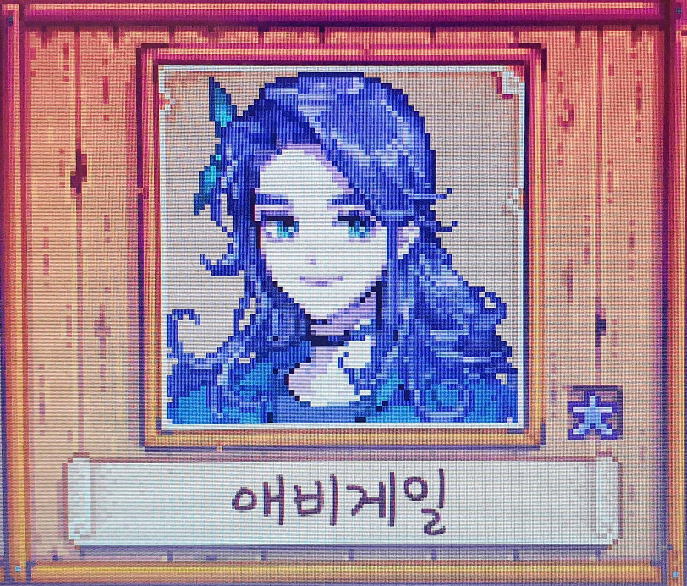

 애비게일은 잡화점에서 부모님과 같이 살고 있습니다. 가끔씩 애비게일의 '전통방식과 다른 생활방식'을 걱정하는 엄마와 싸우곤 합니다. 그녀의 어머니는 다음과 같이 말합니다. "애비게일이 옷 좀 평범하게 입고 이제 푸른색 머리로 염색하지 않았으면 좋겠어. 할머니처럼 얼마나 아름답고 자연스런 머리색을 가지고 있는데. 아, 그리고 터무니없는 오컬트 대신 좀 더 유익한데 관심을 두면 좋을텐데." 여러분은 애비게일이 묘지에 혼자 있거나, 폭풍우 속에서 개구리를 보는 모습을 볼 수 있습니다. 잡화점 주인인 피에르의 딸. 특이한 취향 때문에 부모와 자주 다툰다. 방에서 게임을 하거나, 묘지에서 홀로 있거나, 광산 근처 호숫가에서 플루트를 연주하는 걸 볼 수 있다. 가장 10대 소녀 이미지에 근접한 캐릭터이다. 피에르와 캐롤라인의 방에 있는 책꽂이를 보면 '부모를 위한 기본강좌:청소년기 살아남기'라는 책이 있는 점, 에밀리 또는 캐롤라인과의 대화에서 애비게일의 졸업식을 언급한 점, 술이 좋아하는 선물로 들어간 것을 볼 때 10대 후반 내지는 성년이 된지 얼마 안 된 것으로 보인다. 비디오 게임과 모험과 플루트 연주를 즐기는 기분파에 독특한 취향으로 유명하다. 농장의 풀숲들이 정리되어서 모험을 할 수 없다고 아쉬워한다든지, 혼자서 검술 연습을 해서 땀 범벅이 된다든지, 특정 물건을 갖고 싶다고 재잘거려서 선물 취향을 파악하기도 쉽다. 비슷한 외향적인 캐릭터 레아가 성숙한 예술가먹방컨셉이라면, 애비게일은 아직 풋풋한 소녀티를 못 벗은 점이 포인트.